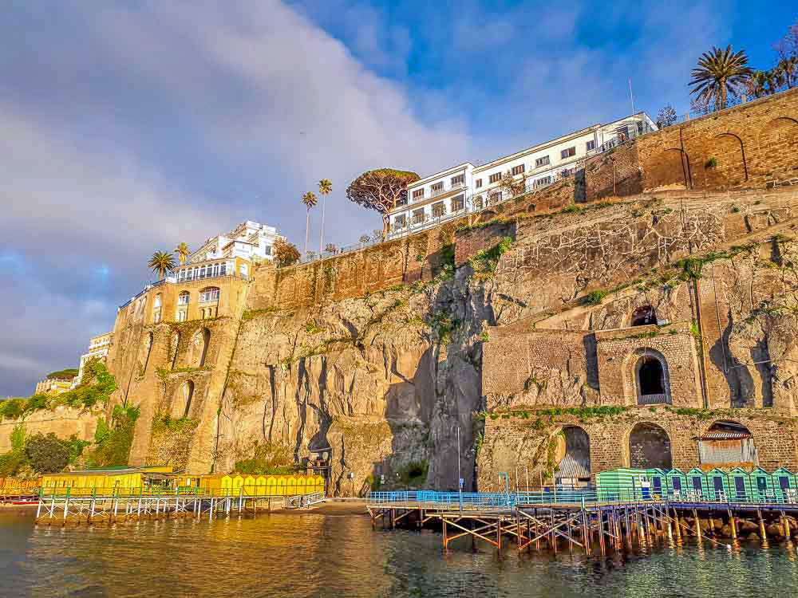

Se formos rigorosos, Sorrento não faz geograficamente parte da Costa Amalfitana. Mas, para além de ser uma cidade que vale muito a pena visitar, é a mais fácil de alcançar e a mais prática para montar base e explorar o resto da região. Especialmente para quem não viaja em veículo próprio e/ou prefere recorrer a tours organizados, é desde Sorrento que partem a maioria dos transportes e visitas, não só para a Costa Amalfi mas também para Capri, Nápoles, Pompeia e o vulcão Vesúvio. Se vier por estrada desde Nápoles ou Pompeia, a vista desde a descida de Vico Equense vai deixá-lo logo de boca aberta! Depois, a cidade em si é muito pitoresca, com uma bonita basílica no largo principal e um centro histórico com ruas pedonais. Lá em baixo, para além do porto onde se pode chegar de ferry desde Nápoles ou apanhar um barco para Capri e algumas terras da Costa Amalfi, há um conjunto de praias muito curiosas e fotogénicas. Estas praias citadinas têm pouca areia, mas estão montadas entre molhes de pedra e madeira, formando grandes enseadas com água calma para tomar banho.
Sorrento